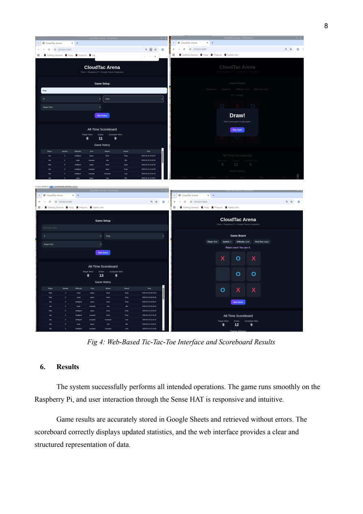

3×3 board on an 8×8 display
Designed a cell-coordinate mapping that represents each logical square with a 2×2 LED block.
AI · EMBEDDED SYSTEMS · CLOUD · NETWORKING
An end-to-end engineering project combining Raspberry Pi hardware, Sense HAT interaction, rule-based and Minimax AI, local and cloud data, a Flask web experience, and packet-level network validation.

PROJECT GOAL
The team designed an interactive Tic-Tac-Toe system in which a human player competes against an AI through the Raspberry Pi Sense HAT joystick and 8×8 LED matrix. Results are persisted locally, transmitted securely to cloud services, and presented through a browser-based dashboard.
IMPLEMENTATION
The player navigates a mapped 3×3 board using the Sense HAT joystick. A coordinate system maps each logical cell to the limited 8×8 LED matrix, with color-coded moves, cursor feedback, and result animations.
Weak mode selects a random valid move. Intelligent mode uses the Minimax algorithm with depth-based scoring to evaluate future game states, block threats, prioritize winning moves, and play optimally.
SQLite stores players, games, moves, and settings. The application design includes SHA-256 password hashing, parameterized SQL queries, and input validation to reduce common data-handling risks.
Completed results—including player, symbol, difficulty, outcome, and timestamp—are sent to Google Sheets through authenticated API calls. Flask provides a web game, scoreboard statistics, recent match history, and dynamic cloud-backed results.
NETWORK VALIDATION
Traffic capture confirmed reliable encrypted communication between the Raspberry Pi and Google services.
PROBLEM SOLVING
Designed a cell-coordinate mapping that represents each logical square with a 2×2 LED block.
Filtered events and added a small delay so only valid single presses are processed.
Used depth-based Minimax scoring and the game’s limited search space to maintain responsive play.
Separated LED rendering from game logic to keep the board synchronized after every move.
Verified credentials and services, tested modules independently, structured code into maintainable functions, and added exception handling so cloud failures do not crash the game.
SKILLS DEMONSTRATED
Recursive Minimax, game-state evaluation, decision logic, and difficulty design.
Hardware input, LED output, constrained interfaces, event handling, and real-time coordination.
SHA-256 hashing, parameterized SQL, validation, SQLite schema design, and API credentials.
HTTPS/TLS, TCP, latency, packet capture, Wireshark analysis, and cloud communication.
Flask, browser UI, Google Sheets API, authenticated cloud storage, and live statistics.
Modular architecture, testing, debugging, documentation, teamwork, and iterative improvement.
PROJECT EVIDENCE
The two reports document the embedded-system design, AI implementation, database architecture, cloud integration, Flask interface, network captures, testing, results, challenges, and source code.